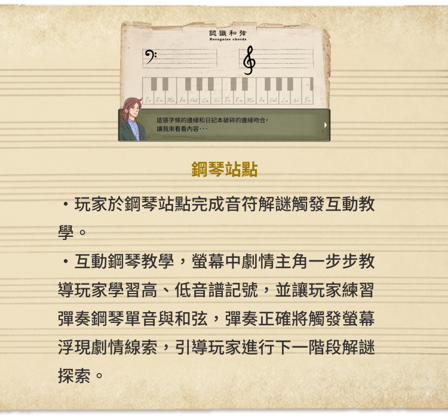
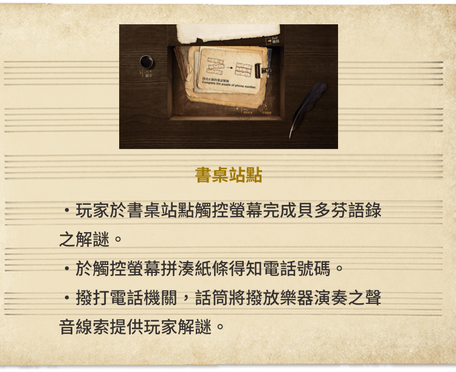
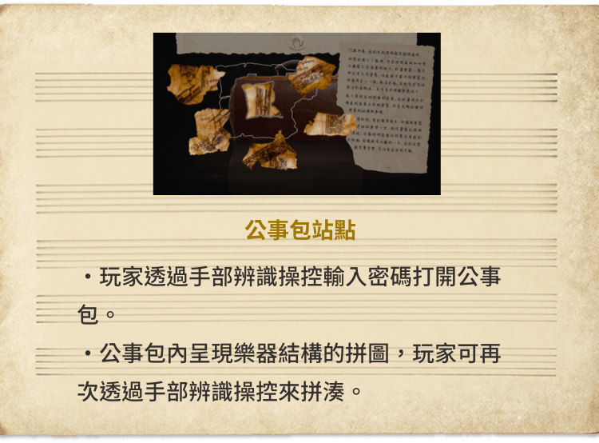

穿越日記「創造」怎麼玩?
在遊戲過程中，你將運用創意、邏輯、觀察力、知識來解開一道道謎題，
每解開一題便可將故事推進並獲得新的線索，
最終完成任務順利破關。
木作鋼琴區
玩家於木作鋼區完成音符解謎觸發互動教學。
互動鋼琴教學，螢幕中劇情主角一步步教導玩家學習高、低音譜記號，並讓玩家練習彈奏鋼琴單音與和弦，彈奏正確將觸發螢幕浮現劇情線索，引導玩家進行下一階段解謎探索。
書桌區
玩家於書桌區觸控螢幕完成貝多芬語錄之解謎。
於觸控螢幕拼湊紙條得知電話號碼。
撥打電話機關，話筒將播放樂器演奏之聲音線索提供玩家解謎。
公事包區
玩家透過手部辨識操控輸入密碼打開公事包。
公事包內呈現樂器結構的拼圖，玩家可再次透過手部辨識操控來拼湊。
遊戲分為新手初階版以及進階版，歡迎資深玩家討戰


